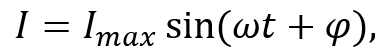
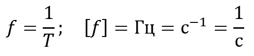
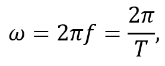
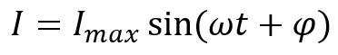

Загальне визначення змінного струму та його характеристики
Змінний струм – це електричний струм, значення та напрямок якого з часом неперервно змінюються. На відміну від постійного струму, який тече в одному напрямку зі сталою силою, змінний періодично змінює свій напрямок і величину.
Його поведінку можна описати за допомогою виразу:

де Imax – амплітуда коливань, ω – кутова частота, φ – початкова фаза.
Ця формула відображає періодичний характер змінного струму та показує, як його значення змінюється з плином часу.
Змінний струм характеризується амплітудою, частотою, фазою та періодом. Через зміну напрямку протікання одну з його півхвиль умовно вважають додатною, а іншу – від’ємною, що дозволяє зручно описувати його коливальний характер.

Рисунок 1.1.1
На рисунку 1.1.1 зображено графік струму, який проходить повний цикл своїх змін через кожні рівні проміжки часу T. Час T, протягом якого періодичний змінний струм проходить повний цикл своїх змін і повертається до початкового значення, називається періодом змінного струму. Якщо струм через рівні проміжки часу повторює повний цикл змін, його називають періодичним змінним струмом. Одним із найпоширеніших видів періодичного струму є синусоїдальний струм, значення якого змінюється за гармонічним законом – тобто описується функціями синуса або косинуса.
Величина, обернено пропорційна до періоду, називається частотою змінного струму. Вона описує, скільки повних циклів коливань здійснюється за одиницю часу, і виражається у Гц:

Згідно з графіком на рисунку 1.1.1, частота поданого змінного струму буде дорівнювати 1 Гц, оскільки за період T він виконує одне повне коливання.
Амплітуда змінного струму – максимальне значення сили змінного струму (у позитивному або негативному напрямках), якого він досягає під час свого періодичного коливання. На рисунку 1.1.1 амплітуда позначена величиною Im.
Фаза змінного струму – це фізична величина, яка характеризує зсув коливань відносно деякого початкового моменту часу. Вона позначається символом φ і вимірюється в градусах або радіанах.
Тісно пов’язана з фазою величина – кутова частота. Вона описує, як швидко змінюється фаза струму з часом, і визначається за формулою:

де ω – кутова частота, f – частота коливань, T – період коливань.
Кутова частота вимірюється в радіанах на секунду (рад/с) і відображає, на скільки радіанів змінюється фаза за одну секунду.
У формулі для визначення миттєвого значення сили струму

вираз ωt+φ називають фазою коливання в момент часу t. Тут ωt показує, як фаза змінюється з плином часу, а φ задає її початкове значення.
Таким чином, кутова частота визначає швидкість зміни фази, а початкова фаза – положення коливання на початку спостереження.
Напрям змінного струму зазначається при вимірюванні сили струму: оскільки це скалярна величина, її значення може бути як додатним, так і від’ємним, причому знак визначається саме напрямком струму в колі.